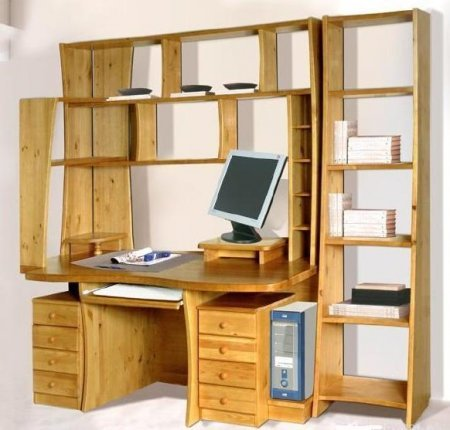

Корпус для Orange PI PC из акрила

В хозяйстве трудятся несколько одноплатных компьютеров - два Raspberry PI - один старый в качестве принт сервера и онлайн радио в одной комнате, другой посвежее - вместо TV приставки и в качестве эмулятора ретроконсолей, OrangePi Zero - является мозгами умного дома и на нём запущен Majordomo. Orange Pi PC - выполняет обязанности компьютера на рабочем месте и используется для прошивки микроконтроллеров, для тестов и для отображения распиновки и даташитов и документации в процессе пайки. Второй Orange Pi PC с установленным на нём OctoPrint нужен для возможности печатать на 3D принтере с разных компьютеров через Wi-Fi. Для Raspberry PI можно найти огромное множество различных корпусов, притом дёшево. Для Orange PI долгое время ситуация была и остаётся плачевной.
Кунсткамера древесностружечной промышленности или ЛДСП неадекватность
 Когда я учился в 10м классе школы, то, что выполняло роль моего компьютерного стола понадобилось заменить чем-то более приличным. Неприличное же когда-то собрал мой дед в свойственной ему манере - из гуано и веточек, причём гуано было не высшего сорта, а веточки трещали под нагрузкой, грозя вернуться в исходное агрегатное состояние под названием "строительный мусор". Выглядело это соответственно и решительно не выдерживало ни критики, ни массы компьютерного железа, которая к тому моменту в моей комнате накопилась.
На дворе стоял линолеум миллениум, мы ходили с мамой по конторам, занимающимся продажей мебели, и искали подходящий экземпляр класса "компьютерный стол". Тогда я понял, что проектируют подобную мебель по всей видимости инопланетяне, выращенные в закрытых подземных лабораториях из пробирок каким-то злым гением. В силу своего ограниченного кругозора они не имели представления ни о том, что такое компьютер, ни о комфорте работы, ни об анатомии человека в целом.
Теги: ностальгия, diy